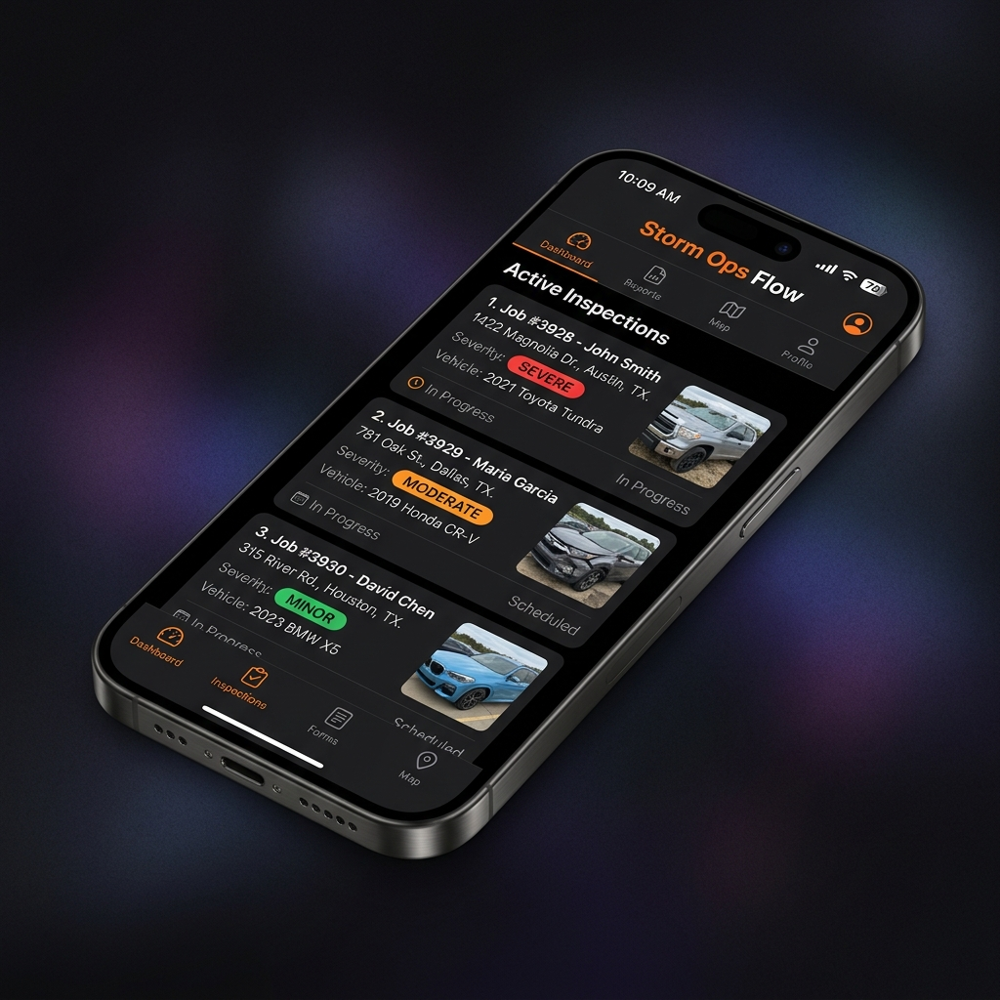

Field-first product design
Design the mobile experience around the conditions, decisions, and evidence collection that happen on site.
Dent Experts needed a system built around the field team: inspections, photos, claim records, handoffs, and the office visibility needed to run a storm operation without losing context.

Product concept UI · custom iPhone app and connected operations systemThe Problem
Dent Experts operates a paintless dent repair (PDR) business where field crews, adjusters, office staff, customers, and insurance systems can all touch the same job. The usual tools are optimized for the carrier. Dent Experts needed a system optimized for the people doing the actual inspection, documentation, and repair work.
Field context was vulnerable at every handoff: a vehicle, photos, severity, claim details, next action, and who owned it next. When the record lived across separate tools, the team had to reconstruct the job instead of moving it forward.
The brief was a shared field-to-office operating system that kept the operator’s workflow at the center while working alongside the insurance process.
What We Built
57 built the Storm Ops Flow system: a custom iPhone app for the field, a shared operations record behind it, and a management layer that made jobs, documentation, and handoffs visible across the business.
The app puts an active job queue, vehicle inspection, photo capture, severity, and claim context in the technician’s hand—where the work is actually happening.
Storm identification, dispatch, inspection, documentation, claim submission, scheduling, and repair sign-off all work from the same operating record instead of being reconstructed at every new stage.
The system was designed to keep an operator-controlled record central while making room for the insurance-platform and claim-data handoffs that the work requires.
Management gets a clear view across crews, claim status, photos, documentation, assignments, and pipeline stage—without needing a separate conversation to discover the state of every job.
The Result
Storm Ops Flow gave Dent Experts a platform shaped around how its operators actually work: one field app, one shared job record, and one operating view from inspection through repair. The team’s assessment was direct: the system rivals the major insurance platforms they use every day—because it is built for the operator instead of the carrier.
Job queue, vehicle inspection, and on-site photo capture where work happens.
Field data and back-office context stay connected to the same job.
Inspection, documentation, claim, scheduling, and repair stages work from one system.
“He built a complete Apple application and custom system that rivals the major insurance platforms we use daily.” — Dent Experts
Could This Work for You?
This is for operations where field and office teams touch the same job but do not share a trusted record. Start with one job from dispatch to closeout; we map the evidence, handoffs, mobile moments, and existing systems that need to stay connected before proposing a build.
Design the mobile experience around the conditions, decisions, and evidence collection that happen on site.
Connect photos, inspections, job status, and sign-off so the same job is not reconstructed by every team.
Keep the operator-owned record central while connecting the outside systems and management visibility the work needs.
Let's Talk
Bring one current inspection or claim workflow. We'll map the field-to-office handoffs, identify the evidence baseline, and define the smallest useful product slice.
Request a Fit CallMeeting format and availability are confirmed when scheduled.